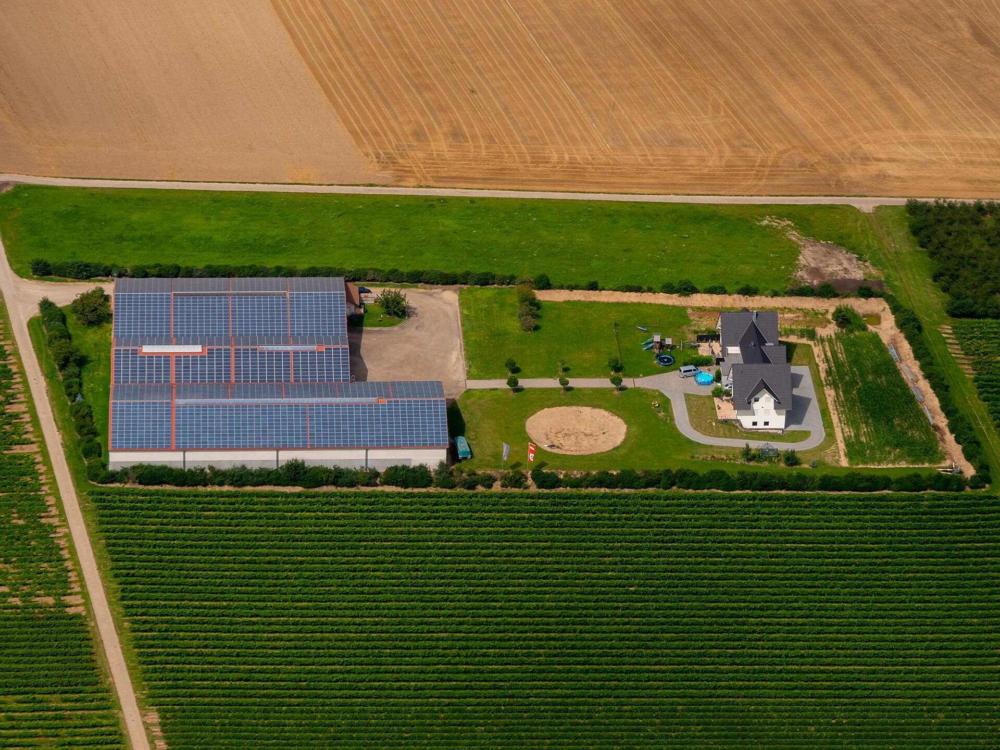

地点69.4012° N, 134.1937° W
成像时间2026 年 10 月 6 日 10:51 UTC
交付时间2026 年 10 月 6 日 16:07 UTC
卫星经过的地方皆可预约
任何纬度，任何经度，同一只钟。
- 纬度，从极到极
- 180°
- 经度，绕满一圈
- 360°
- 从过境到交付，至多
- 6小时
为一次理赔、一片农田、一项研究
说出地点，和那个要紧的日子。

- 保险公司
- 风暴来临前的屋顶，以及风暴过后同样的屋顶。
- 农户
- 某块田，在它需要查看的那一天。
- 研究者
- 一块样地，在方法设定的日期上。
时钟从过境那一刻启动
就是本页顶部那张成像背后的订单。
过境10:51UTC卫星飞越目标地点。
交付16:07UTC成像落入订单。
窗口关闭16:51UTC过境后 6 小时。
09:00 UTC
12:00 UTC
15:00 UTC
18:00 UTC
每一次过境都标明交付时刻
先选定地点，再从它接下来的过境里挑一次。
新建订单
订单 NS-0142
地点（十进制度）38.7290, -9.4730
面积4.0 km²